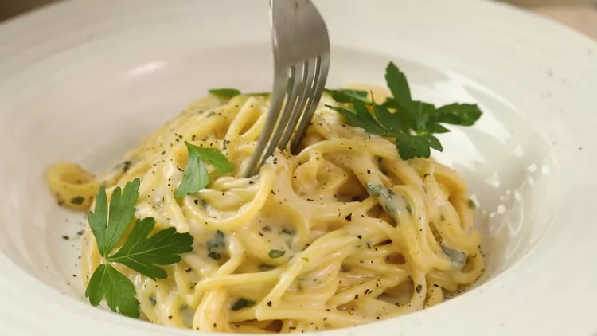

Creamy Garlic Pasta
Home

Description
As far as creamy pasta recipes, this is the best I have
ever had. Add prawns and/or scallops to make an amazing seafood Alfredo.
Ingredients
- 2 teaspoons olive oil
- 4 garlic cloves, minced
- 2 tablespoons butter
- 3 cups chicken broth, or more as needed
- 1/2 teaspoon ground black pepper
- 1/4 teaspoon salt
- 1/2 pount spaghetti
- 1 cup grated Parmesan cheese
- 3/4 cup heavy cream
- 1 1/2 tablespoons dried parsley
Directions
- Heat olive oil in a medium pan over medium heat.
- Add garlic and stir until fragrant, 1-2 minutes.
- Add butter and stir constantly until melted.
- Pour in 3 cups of chicken broth; add pepper and salt.
- Bring to a boil.
- Add spaghetti and cook, stirring occasionally, until
tender yet firm to the bite, about 12 minutes.
- Add more chicken broth if pasta starts to stick to the pan.
- Add Parmesan cheese, cream, and parsley and mix until thoroughly
combined.
- Serve immediately.